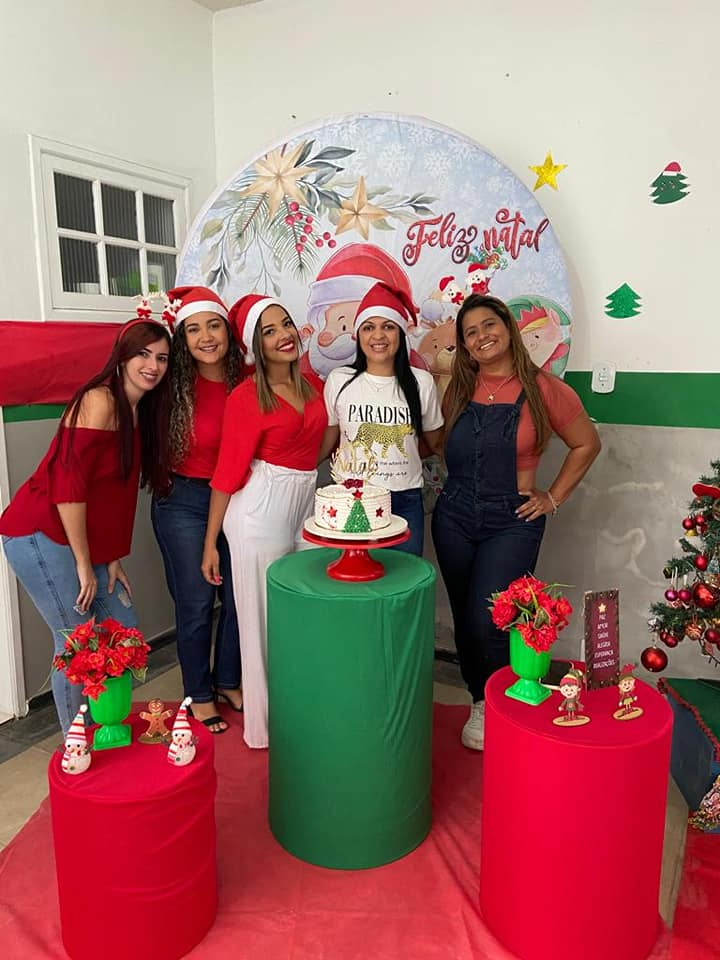

Centro Especializado em Reabilitação
Físicas e Intelectuais
Trabalhando por Iguaba Grande
Localizado em :
Rua Dr. Antônio Teixeira, n°40, Iguaba Grande, RJ, Brazil
Horário de Funcionamento
seg à Sexta
08:00 às 17:00
Contato
cerfloreser@gmail.com
(22)2624-4286
Natal no Flore'ser

Neste Natal o meu maior desejo é que os nossos corações estejam plenos de esperança e que as nossas almas nos movam sempre em direção ao bem comum. Que o amor nos ilumine e que cada gesto, cada uma das nossas palavras tenham o dom de nos trazer paz e felicidade. Que o Natal nos inspire na busca da harmonia e da paz. Que este espírito prevaleça sobre o mal e nos ajude a promover a concordância e a aceitação entre todos os seres humanos. Amor e paz hoje e sempre! É o que deseja a família Flore'ser. Geisi Rodrigues
Dia dos pais
Nesta data a Equipe do Flore'Ser realizou uma singela homenagem em alusão ao Dia dos Pais e nesta data tão especial tivemos a oportunidade de nos reunirmos numa Roda de Conversa sobre a Saúde do Homem moderada pelo Setor da Enfermagem, assunto tão importante para incentivarmos Pais, Cuidadores e Familiares que desempenham papel essencial. Agradecemos a participação e informamos que também às 14 horas estaremos reunidos para recepcionar os responsáveis
Trabalhando por Iguaba Grande
Localizado em :
Rua Dr. Antônio Teixeira, n°40, Iguaba Grande, RJ, Brazil
Horário de Funcionamento
seg à Sexta
08:00 às 17:00
Contato
cerfloreser@gmail.com
(22)2624-4286